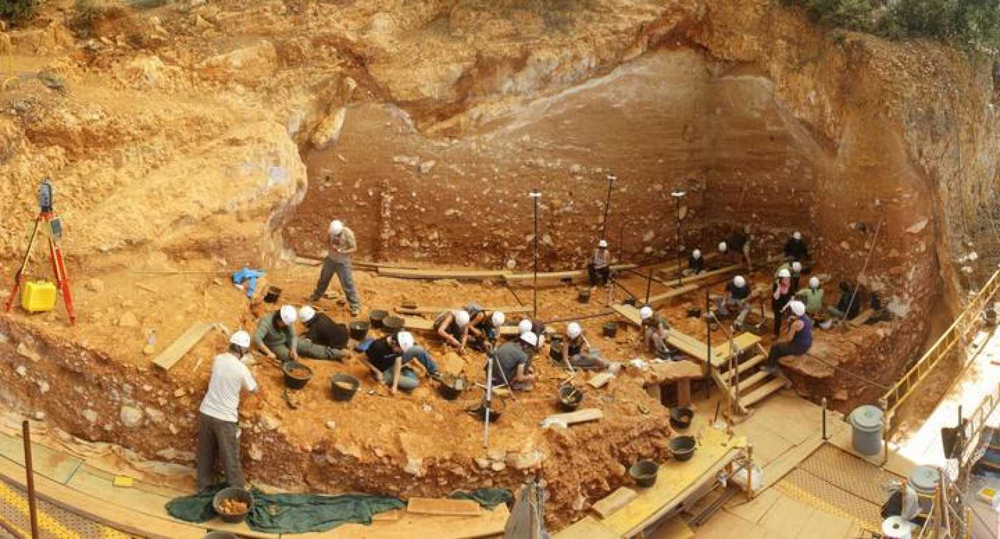

BURGOS
LOCALIZACIÓN

Fuente: Wikipedia: Burgos
LOCALIDADES PRINCIPALES
Entre sus municipios más importantes encontramos:
- Burgos
- Miranda de Ebro
- Aranda de Duero
- Briviesca
- Medina de Pomar
- Villarcayo de Merindad de Castilla la Vieja
- Valle de Mena
- Lerma
- Roa
- Alfoz de Quintanadueñas
Fuente: Spain.info
GEOGRAFÍA
En la provincia de Burgos hay fuertes contrastes de relieve entre las zonas orientales-septentrionales y las occidentales-meridionales. Se trata de una de las provincias españolas de mayor altitud, que se puede cifrar en una media superior a los 800 m sobre el nivel del mar, debido sobre todo a sus extensos páramos caso del Páramo de Masa y La Lora,y entre ambos el Valle del Rudrón.
La cordillera Cantábrica ciñe a la provincia por el norte y nordeste que incluye los páramos antes citados, mientras que la cordillera Ibérica lo hace por el este y sureste. En esta última cordillera se encuentra el pico San Millán (2130 m), el más alto de la provincia.
La altitud repercute en el clima, caracterizado por inviernos rigurosos y largos.
HISTORIA
En la provincia de Burgos se encuentra el yacimiento prehistórico más importante de España y uno de los más importantes del mundo. Se trata del yacimiento de la sierra de Atapuerca, que se extiende de noroeste a sudeste, entre los sistemas montañosos de la cordillera Cantábrica y el sistema Ibérico. Ha sido declarado Espacio de Interés Natural, Bien de Interés Cultural y Patrimonio de la Humanidad como consecuencia de los excepcionales hallazgos arqueológicos y paleontológicos que alberga en su interior, entre los cuales destacan los testimonios fósiles de, al menos, tres especies distintas de homínidos: Homo antecessor, Homo heidelbergensis y Homo sapiens.
El año 1997 es de gran importancia para el yacimiento ya que se define una nueva especie humana, el Homo antecessor. Las investigaciones reciben varios premios de prestigio, entre ellos el Príncipe de Asturias y el de Ciencias Sociales de la Junta de Castilla y León. El año 1998 dejaría la constancia de que los restos hallados en la Sima de los Huesos, asignados a Homo heidelbergensis, pertenecen a seres humanos, que además de tener capacidad de abstracción y simbología se plantean los problemas místicos inherentes al ser humano. Esto se confirma por el hallazgo de una herramienta bifaz (Modo 2) sin utilizar y realizada con un material muy apreciado, el llamado Excalibur, depositada como homenaje a algún miembro del grupo allí enterrado.
Fuente: RTVE
Los hallazgos del yacimiento son expuestos, desde el año 2010, en el Museo de la Evolución Humana.
CULTURA
Uno de los eventos culturales más importantes de la provincia de Burgos es el Festival de Ebrovisión, un festival de música independiente que se celebra en Miranda de Ebro desde el año 2001 congregando a más de 10 000 asistentes.62 Algunas de las bandas que han participado en este evento son Fangoria, Ocean Colour Scene, Vetusta Morla, Sidonie, The Raveonettes, Los Planetas, Mando Diao, entre otras. Es organizado por la Asociación Cultural Rafael Izquierdo de Miranda de Ebro. La revista Mondosonoro lo catalogó en 2010 como el tercer mejor festival de España.6364El Sonorama (desde 2008 Sonorama-Ribera) es otro festival de música muy relevante que se celebra en la localidad burgalesa de Aranda de Duero desde 1998. Considerado como el festival más importante del interior, el número de visitantes ha ido creciendo conforme lo hacía su historia y reputación. Está organizado por la asociación cultural, y sin ánimo de lucro, Art de Troya, a mediados de agosto de cada año. Destacar la superación de las previsiones de 2010 donde pasaron por Sonorama más de 30.000 personas.
NATURALEZA
Espacios naturales
- El río Ebro en todo su recorrido, y principalmente los desfiladeros que forma al atravesar sistemas calcáreos: Orbaneja, Pesquera, Tudanca, Hocinos, Horadada y Sobrón. Destaca la peculiaridad del llamado Pozo Azul.
- Los valles de Mena, de Valdivielso, Las Machorras.
- Desfiladeros: Yecla, Río Lobos, Arlanza, Nela.
- La Sierra de la Demanda y sus estribaciones.
- Cuencas visuales cerradas: Poza de la Sal, Huidobro, Alba o Caderechas.
- Sistemas montañosos de gran relieve: Monte Santiago, Montes Obarenes, Montes de la Peña, Las Mamblas, Neila-Umbría.
- Campiñas que han mantenido la diversidad de usos del suelo: Demanda baja, Alto Arlanza, Juarros, Lara, etc.
- Montañas de Espinosa: Zona de Especial interés cerca del Castro Valnera y Estación de esquí de Lunada en Espinosa de los Monteros, Ojo Guareña
Fuente: Diputación de Burgos
TRADICIONES
- El Colacho
- Se celebra el domingo del Corpus en Castrillo de Murcia. Es una fiesta de la Iglesia católica destinada a celebrar la Eucaristía. Su principal finalidad es proclamar y aumentar la fe de la Iglesia en Jesucristo presente en el Santísimo Sacramento.
- Romería de las Nieves
- Se celebra el 5 de agosto y es la romería más importante de la zona norte de Burgos. Se celebra en la localidad de Las Machorras, en el municipio de Espinosa de los Monteros. En ella tienen lugar unas danzas típicas de un posible origen prerromano, además de lo que se denomina como "Echar el verso" en el que los propios danzantes y "el Bobo" cuentan, con una entonación particular, las noticias acaecidas en el pueblo durante el año. Acude mucha gente de las provincias de Burgos, Cantabria, Vizcaya, Zaragoza y Madrid.
- Fiestas de San Juan del Monte
- En fecha variable, se celebra el fin de semana anterior al lunes de Pentecostés en Miranda de Ebro. Declaradas fiestas de interés turístico nacional, desde 2015. Su origen se remonta a la Edad Media y es considerada actualmente como la mayor romería del norte español.
- Sampedros
- Fiestas en honor de San Pedro y San Pablo: 29 al 6 de julio en Burgos.
- Fiestas Patronales de Aranda de Duero
- Conocidas como fiestas de la Virgen de las Viñas. Con 9 días de duración, se suceden alrededor de la segunda semana de septiembre, iniciándose con el llamado Cañonazo. El día de la Virgen de las Viñas es el domingo siguiente al 8 de septiembre (Natividad de Nuestra Señora).
- Romería de San Bernabé
- En la Merindad de Sotoscueva, junto a la histórica Villa de Espinosa de los Monteros, se celebra el sábado más próximo al 11 de junio una romería tradicional con la concurrencia de mucha gente de las provincias cercanas. Tiene lugar en el entorno de la Cueva de San Bernabe (Ojo Guareña).